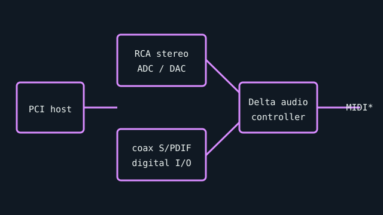

[ INDIVIDUAL COMPONENT // SOUND HARDWARE ]
M-Audio Audiophile 2496
The Audiophile 2496 is a PCI recording interface built around stereo analog I/O and S/PDIF. Its name describes the 24-bit/96-kHz product capability, not guaranteed performance of every legacy driver/application combination.

Specifications
| Product ID | M-Audio (formerly Midiman) Audiophile 2496 PCI digital audio card; verify the printed product label and card revision. |
|---|---|
| Bus | 32-bit PCI card; not a native PCIe device. |
| Connectors / I/O | Stereo RCA line input and output; coaxial S/PDIF input/output; MIDI I/O via the supplied multi-pin breakout cable. |
| Conversion | 24-bit resolution, up to 96 kHz; stereo analog ADC/DAC plus digital S/PDIF path. It is a two-channel analog interface, not a multichannel surround card. |
| Drivers / OS | Original M-Audio Delta driver family supports legacy Windows and Mac releases; current support must be checked against the archived installer release notes. No modern Windows version is claimed without that check. |
| Variant compatibility | PCI slot, legacy driver, and breakout cable are required. Do not confuse Audiophile 2496 with the later USB Audiophile products or the Delta 44/66. |
Service & preservation
Retain the original MIDI breakout cable and capture the device/subsystem ID before migrating a working PC. Check RCA jack soldering and board capacitors. Archive the exact Delta driver version and its release notes; legacy installer availability is not evidence of support on a contemporary OS.
Primary sources
- M-Audio — legacy product downloadsManufacturer portal for archived Audiophile 2496 drivers and associated product documentation.
- M-Audio — current support downloadsOfficial support portal; use the archived package notes to establish actual OS compatibility.